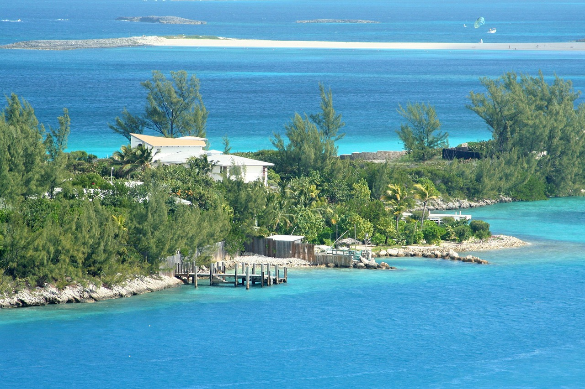

Ponořte se do nádherného ráje na zemi při našem nezapomenutelném zájezdu na Bahamy! Připravte se na vzrušujÃcà dobrodružstvÃ, bÃlé pláže s jemným pÃskem, azurově modrou vodu a neuvěřitelné scenérie, které vytvářà tento karibský ostrovský ráj. Po pÅ™Ãletu na Bahamy vás uvÃtá teplý karibský vánek a neodolatelná pohostinnost mÃstnÃch obyvatel. Zájezd začne návštěvou hlavnÃho města Nassau, kde se procházka historickými ulicemi proměnà v cestu časem. Obdivujte koloniálnà architekturu, procházejte se požárnà schodištěm královny, prozkoumejte zajÃmavosti v historickém Fort Charlotte nebo se zastavte v proslulém tržišti Straw Market, kde si můžete zakoupit mÃstnà řemeslné výrobky.
Souostrovà vÃce než 700 ostrovů v Karibském moři Hlavnà město Nassau na ostrově New Providence Teplé tropické klima s průměrnou teplotou kolem 25 °C Nádherné pláže a azurově modré moře OblÃbená turistická destinace Božský ráj pro vodnà aktivity